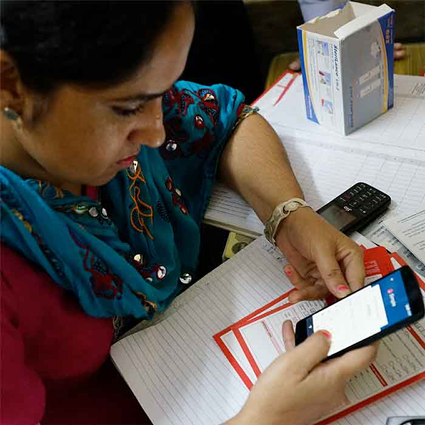
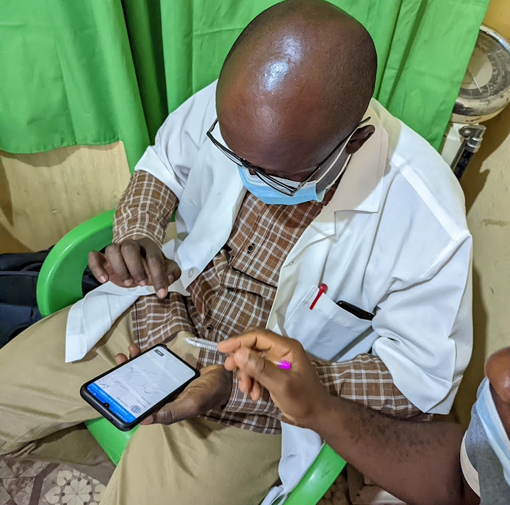
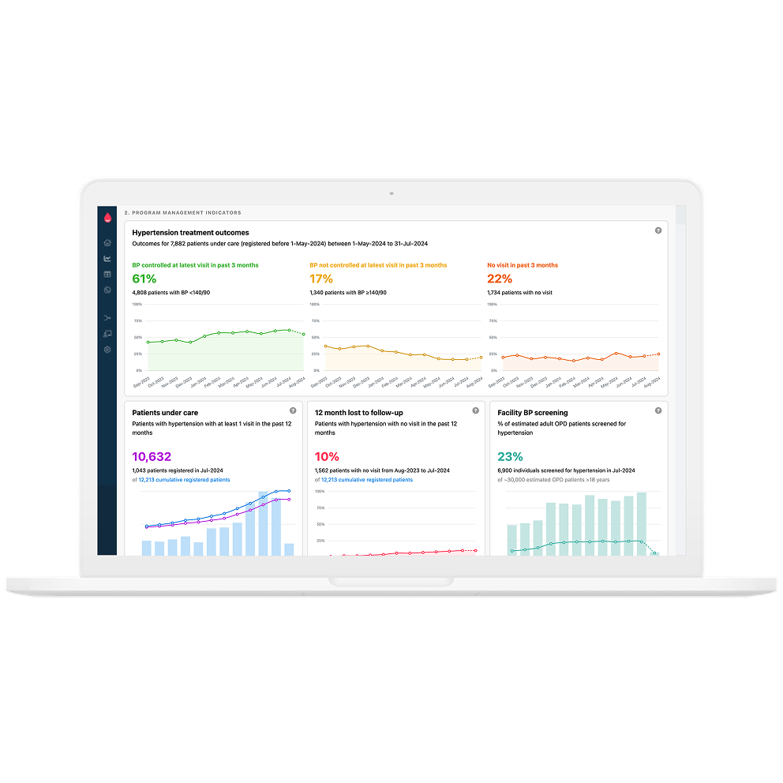

Simple
Health workers in India, Bangladesh, Ethiopia, Sri Lanka and Myanmar use Simple to treat hypertension and diabetes.
Reducing risk of heart attack and stroke with statins

I design digital tools for public health. Mostly the screens a health worker taps through to register a patient and start treatment.
I work with teams building for clinics with shared phones, patchy internet, and five minutes per patient. That constraint is the interesting part.
Health workers in India, Bangladesh, Ethiopia, Sri Lanka and Myanmar use Simple to treat hypertension and diabetes.
Reducing risk of heart attack and stroke with statins

Cut the patient registration flow from 12 screens to 4, with RTSL and the University of Oslo.
Hypertension and diabetes management in Nigeria

An open source dashboard toolkit for cardiovascular programs, built on Grafana. Scaling nationally in Indonesia and the Philippines.

Led design for CallHub's voter and volunteer mobilisation apps for Android and iOS. Built for untrained volunteers in the field, short on time, often in noisy places.
github.com/tonyjoyk/design-together
You write a brief. It pushes back, states its assumptions, then asks questions. When thinking is clear, it draws two lo-fi wireframe directions for the same screen. I built it to see how friction can improve designing with AI.
medicine-tracker-lyart.vercel.app · GitHub
Made it for my mom to track her medicines.
github.com/tonyjoyk/memorymoments
Tried to capture how memories feel, and how that feeling changes over time.
A week to go from a vague problem to something you can test with users.
Five sessions, one week, and a clear list of what to fix.
A clickable prototype you can put in front of someone, not a slide deck.
Getting product, design and engineering to agree on what we are building before we build it.
Say hi: tonykokkad@gmail.com